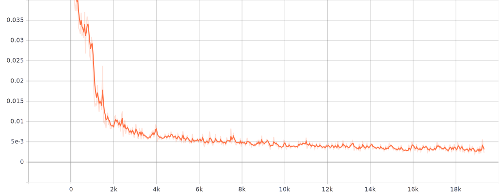
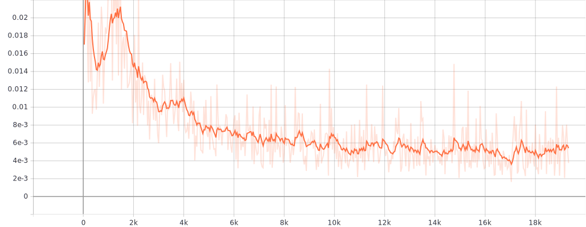
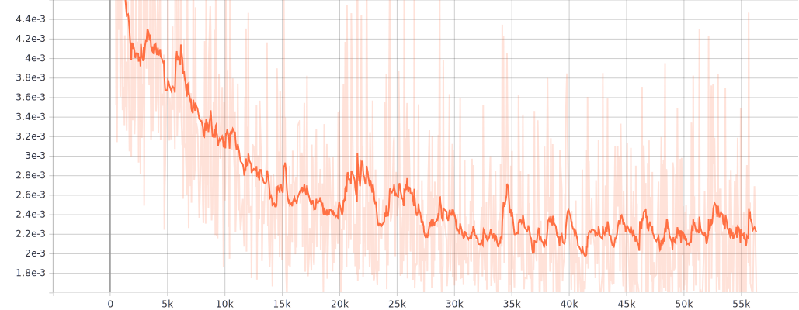
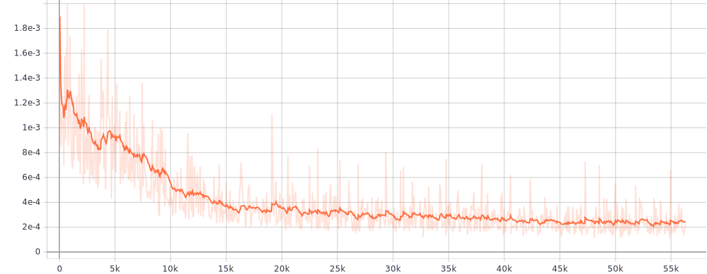
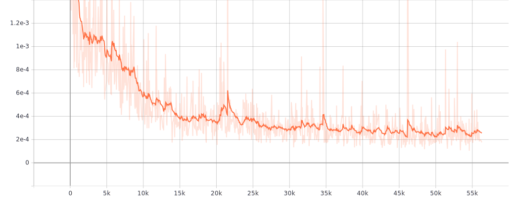
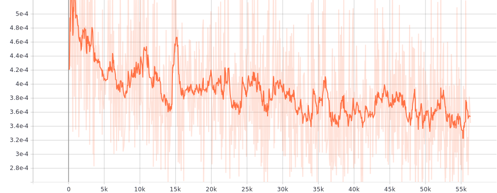
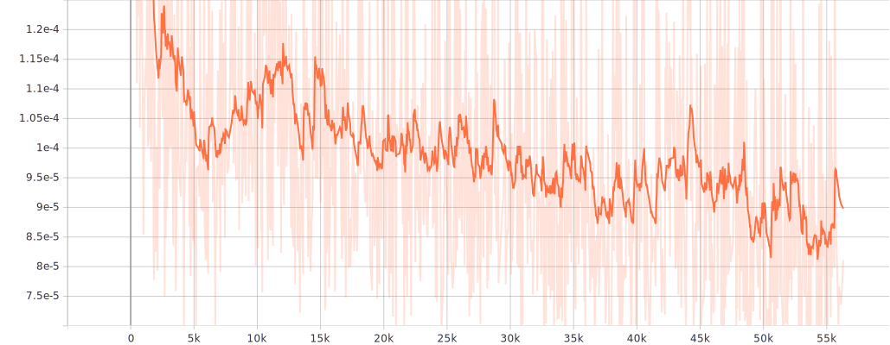
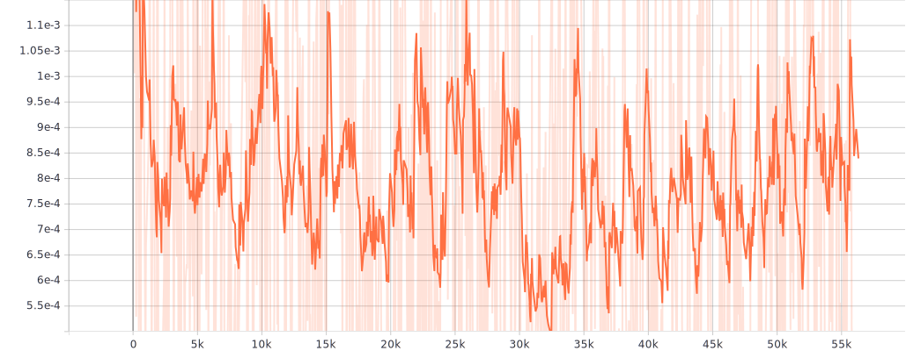
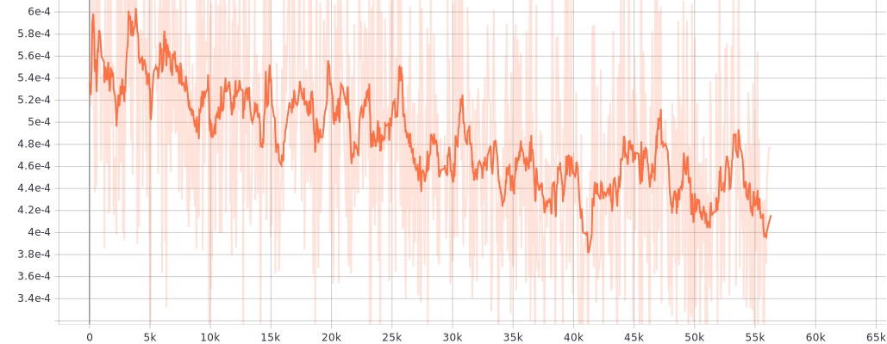

R24-B1 : Result semisupervised - New C.S. normals
Homepage
Plots of losses during training
Details :
Trained with 18000 training samples (8000 with supervised loss, 10000 with unsupervised loss). For each face : 15 sampled envmaps with random rotation around Z axis.
Testing results
Training results
1st phase : Fully supervised training (8000 samples) :
Training loss supervised (L2 all intrinsics) : LA
LA 
Testing loss
Testing loss 
2nd phase : Semi supervised training (10000 unsupervised samples) :
Total training loss : λA LA + λB LB
λA LA + λB LB 
Testing loss
Testing loss 
Training loss unsupervised (L2 only appearance) : LB
LB 
Training loss supervised (L2 all intrinsics) : LA
LA = λapp Lapp + λalb Lalb + λnor Lnor + λenv Lenv
L
A 
Loss albedo (supervised) : Lalb
Lalb 
Loss normal (supervised) : Lnor
Lnor 
Loss envmap (supervised) : Lenv
Lenv 
Loss appearance (supervised) : Lapp
Lapp 